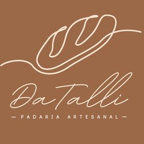
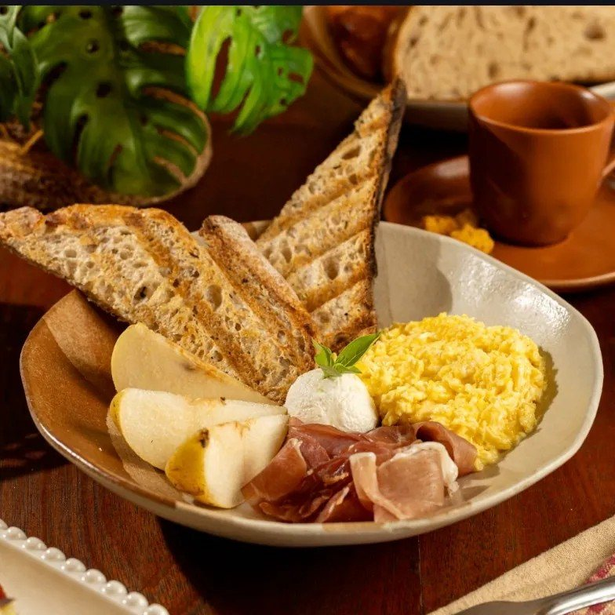
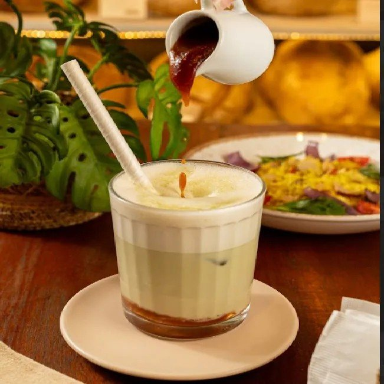
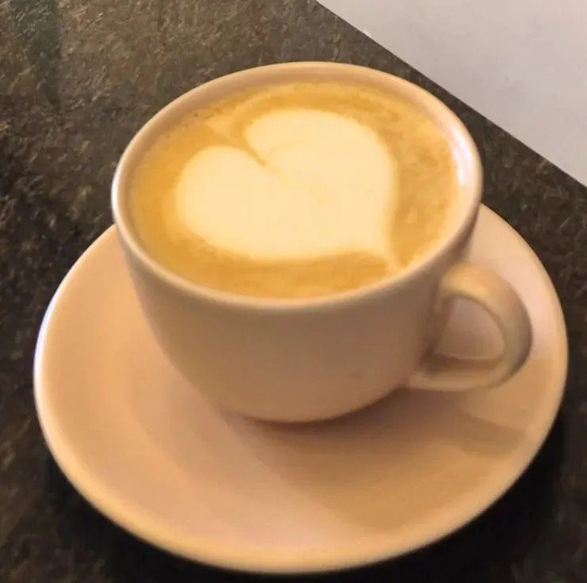

Início · Brunch e cafés
Brunch e cafés no salão
Na padaria da Rua das Hortênsias, o pão da casa vai para a mesa: tostada, cuscuz com ovo de gema mole, bowl, sanduíches e cafés especiais por método.

Brunch
Os pratos do salão
Mix de Pães · R$ 22,90
Sourdough, brioche e focaccia ou ciabatta, quentinhos, com 2 acompanhamentos.
Tostada Da Talli · R$ 25,90
Sourdough crocante com queijo e geleia da casa.
Misto Quente · R$ 27,90
Brioche amanteigado, mussarela e presunto.
Cuzcuz Da Talli · R$ 33,90
Cuscuz marroquino com ratatouille, bacon, rúcula e o “famoso ovo perfeito com gema mole”.
Caprese · R$ 34,90
Ciabatta, búfala, parma, tomate confitado e pesto; pode ser vegetariana.
Bowl Da Talli · R$ 35,90
Sourdough, 2 ovos mexidos, parma, queijo de cabra e pera.
Sanduíche Frio · R$ 35,90
Peito de peru defumado, mussarela, tomate cereja, rúcula e mostarda dijon.
Sanduíche de Pastrami · R$ 39,90
Focaccia, pastrami, mussarela e cebola caramelizada.

Pão à escolha
Troque o pão e acrescente
Nos sanduíches, o pão é à escolha: sourdough tradicional, sourdough 100% integral, focaccia, brioche amanteigado, ciabatta ou croissant (+ R$ 5,00).
- Ovos (2 unidades): + R$ 5,00
- Queijo de cabra boursin: + R$ 7,00
- Geleia de frutas vermelhas ou molho pesto: + R$ 4,00
- Consueto ervas ou defumado: + R$ 5,50
Cafés especiais
Do ristretto à prensa francesa
Duplo Ristretto · R$ 14,90
Extração curta, corpo cremoso e final prolongado. 60 ml.
Café Coado · R$ 15,90
Realça doçura e acidez equilibrada. 160 ml.
Aeropress · R$ 16,90
Infusão encorpada e textura sedosa.
Prensa Francesa · R$ 16,90
Infusão encorpada e aromas profundos.
Capuccino da Talli · R$ 23,90
Espresso e leite com doce de leite de cabra.
Café Gelado · R$ 24,90
Espresso, leite e ganache de chocolate.
Grãos do coado, da Aeropress e da prensa: Blend da casa (Zabelê + Valdo), Café das Meninas ou Café Chocolate do Worlandosvik. Leite de aveia sob pedido.
Receitas do Carlos
O capuccino e o matcha com goiabada


“Matcha com redução de Goiabada. Autoria criada por Carlos (noivo de Talita)”Cardápio da Da Talli
- Matcha Goiabada · R$ 25,90: 40 ml de matcha, leite vegetal ou animal, finalizado com redução de goiabada cascão. Quente ou gelado.
- Capuccino do Carlos · R$ 20,90: espresso, o leite da sua escolha e gotas de chocolate meio amargo. 180 ml.
Na mesa
Fotos do cardápio da casa
Dúvidas frequentes
Perguntas comuns
Precisa reservar mesa?
Não há reserva divulgada pela casa. Para grupos, pergunte pelo WhatsApp.
Até que horas tem brunch?
A padaria abre das 8h às 19h de segunda a sexta e das 8h às 13h no sábado e no domingo.
Tem leite vegetal?
Sim: leite de aveia nos cafés e no matcha, com acréscimo indicado no cardápio.
Passe em casa
Tem fornada saindo na Rua das Hortênsias.
Segunda a sexta, das 8h às 19h; sábado e domingo, das 8h às 13h. Brunch no salão, retirada no balcão, encomendas e delivery próprio.